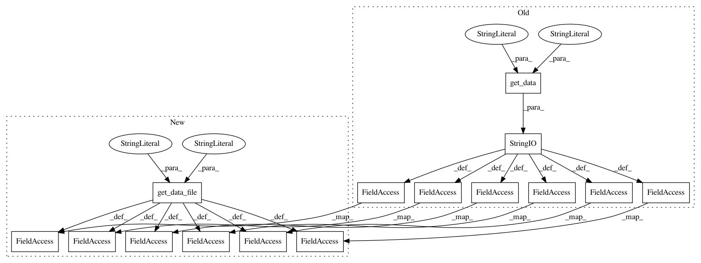

3190edaefb7b5973a73d19593045df83fd8923df,pymc/examples/ARM12_6uranium.py,,,#,7
Before Change
from StringIO import StringIO
data = pd.read_csv(StringIO(pkgutil.get_data("pymc.examples", "data/srrs2.dat")))
cty_data = pd.read_csv(StringIO(pkgutil.get_data("pymc.examples", "data/cty.dat")))
data = data[data.state == "MN"]
data["fips"] = data.stfips * 1000 + data.cntyfips
cty_data["fips"] = cty_data.stfips * 1000 + cty_data.ctfips
data["lradon"] = np.log(np.where(data.activity == 0, .1, data.activity))
data = data.merge(cty_data, "inner", on="fips")
unique = data[["fips"]].drop_duplicates()
unique["group"] = np.arange(len(unique))
unique.set_index("fips")
data = data.merge(unique, "inner", on="fips")
obs_means = data.groupby("fips").lradon.mean()
n = len(obs_means)
lradon = np.array(data.lradon)
floor = np.array(data.floor)
group = np.array(data.group)
ufull = np.array(data.Uppm)
model = Model()
with model:
groupmean = Normal("groupmean", 0, 10. ** -2.)
// as recommended by "Prior distributions for variance parameters in
// hierarchical models"
groupsd = Uniform("groupsd", 0, 10.)
sd = Uniform("sd", 0, 10.)
floor_m = Normal("floor_m", 0, 5. ** -2.)
u_m = Normal("u_m", 0, 5. ** -2)
means = Normal("means", groupmean, groupsd ** -2., shape=n)
lr = Normal("lr", floor * floor_m + means[group] + ufull * u_m, sd ** -
2., observed=lradon)
After Change
data = pd.read_csv(get_data_file("pymc.examples", "data/srrs2.dat"))
cty_data = pd.read_csv(get_data_file("pymc.examples", "data/cty.dat"))
data = data[data.state == "MN"]
data["fips"] = data.stfips * 1000 + data.cntyfips
cty_data["fips"] = cty_data.stfips * 1000 + cty_data.ctfips
data["lradon"] = np.log(np.where(data.activity == 0, .1, data.activity))
data = data.merge(cty_data, "inner", on="fips")
unique = data[["fips"]].drop_duplicates()
unique["group"] = np.arange(len(unique))
unique.set_index("fips")
data = data.merge(unique, "inner", on="fips")
obs_means = data.groupby("fips").lradon.mean()
n = len(obs_means)
lradon = np.array(data.lradon)
floor = np.array(data.floor)
group = np.array(data.group)
ufull = np.array(data.Uppm)
model = Model()
with model:
groupmean = Normal("groupmean", 0, 10. ** -2.)
// as recommended by "Prior distributions for variance parameters in
// hierarchical models"
groupsd = Uniform("groupsd", 0, 10.)
sd = Uniform("sd", 0, 10.)
floor_m = Normal("floor_m", 0, 5. ** -2.)
u_m = Normal("u_m", 0, 5. ** -2)
means = Normal("means", groupmean, groupsd ** -2., shape=n)
lr = Normal("lr", floor * floor_m + means[group] + ufull * u_m, sd ** -
2., observed=lradon)
In pattern: SUPERPATTERN
Frequency: 3
Non-data size: 15
Instances
Project Name: pymc-devs/pymc3
Commit Name: 3190edaefb7b5973a73d19593045df83fd8923df
Time: 2013-12-19
Author: jsalvatier@gmail.com
File Name: pymc/examples/ARM12_6uranium.py
Class Name:
Method Name:
Project Name: pymc-devs/pymc3
Commit Name: 3190edaefb7b5973a73d19593045df83fd8923df
Time: 2013-12-19
Author: jsalvatier@gmail.com
File Name: pymc/examples/ARM12_6.py
Class Name:
Method Name:
Project Name: pymc-devs/pymc3
Commit Name: 3190edaefb7b5973a73d19593045df83fd8923df
Time: 2013-12-19
Author: jsalvatier@gmail.com
File Name: pymc/examples/ARM5_4.py
Class Name:
Method Name: